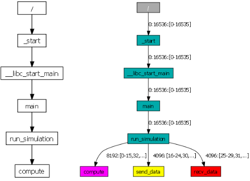
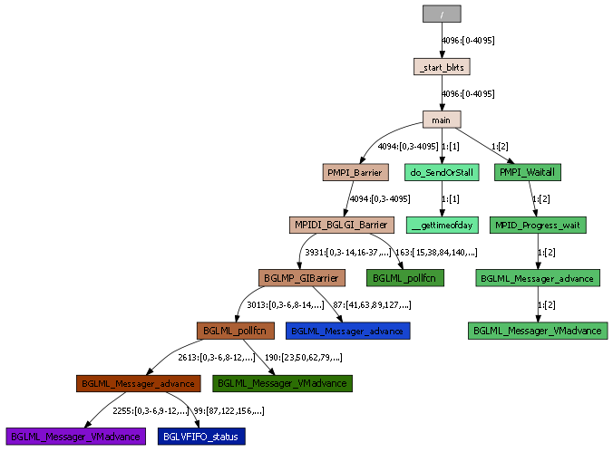
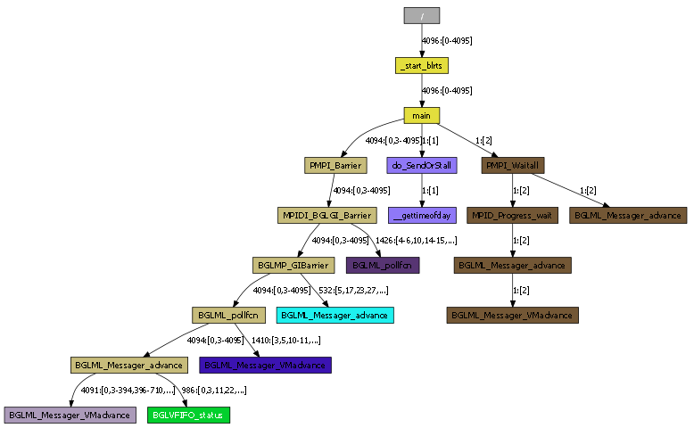
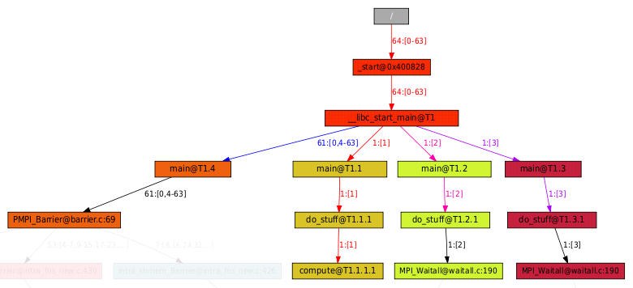

Overview¶
STAT, the Stack Trace Analysis Tool, helps isolate bugs by gathering stack traces from each individual process of a parallel application and merging them into a global, yet compact representation. Each stack trace, as depicted in Fig. 1, captures the function calling sequence of an individual process. The nodes are labeled with the function names and the directed edges show the function calling sequence from caller to callee. STAT's stack trace merging process forms a call graph prefix tree, which can be seen in Fig. 1. The prefix tree groups together traces from different processes that have the same calling sequence and labels the edges with the count and set of tasks that exhibited that calling sequence. Nodes in the prefix tree that are visited by the same set of tasks are given the same color, providing the user with a quick means of identifying the various process equivalence classes.


Fig. 1 A single stack trace (left) and a STAT merged call prefix tree (right)¶
STAT merges stack traces into 2D spatial and 3D spatial-temporal call prefix trees. The 2D spatial call prefix tree (Fig. 2) represents a single snapshot of the entire application. The 3D spatial-temporal call prefix tree (Fig. 3) takes a series of snapshots from the application over time and is useful for analyzing time-varying behavior.


Fig. 2 A 2D spatial call prefix tree¶


Fig. 3 A 3D spatial call prefix tree¶
Stack traces based on function names only provide a high-level overview of the application's execution. However, for certain bugs this view may be too coarse-grained so STAT is also capable of gathering stack traces with more fine-grained information. In particular, STAT can also record the program counter of each frame or with the appropriate debug information compiled into the application (i.e., with the "-g" compiler flag), STAT can gather the source file and line number of each stack frame. Both of these refinements can further delineate processes and refine the process equivalence classes.
In addition, line number information can be fed into a static code analysis engine to derive the logical temporal order of the MPI tasks Fig. 4. This analysis traverses from the root of the tree towards the leaves, at each step analyzing the control flow of the source code and sorting sibling nodes by the amount of execution progress made through the code. For straight-line code, this simply means that one task has made more progress if it has executed past the point of another task, i.e., if it has a greater line number. This ordering is partial since two tasks in different branches of an if-else are incomparable. In cases where the program points being compared are within a loop, STAT can extract the loop ordering variable from the application processes and further delineate tasks by execution progress. This analysis is useful for identifying the culprit in a deadlocked or livelocked application, where the problematic task has often either made the least or most progress through the code, leaving the remaining tasks stuck in a barrier or blocked pending a message. Note, this feature is still a prototype.


Fig. 4 STAT's temporal ordering analysis engine indicates that task 1 has made the least progress. In this example, task 1 is stuck in a compute cycle, while the other tasks are blocked in MPI communication, waiting for task 1.¶